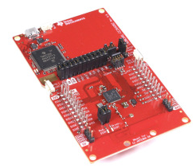

Have you ever want to use your iPhone as a remote control? and you can throw away all other remote control?
FzRemote is not that kind of App :), the truth is iPhone can never be a good remote control alone. The missing physic button click feeling and the latency caused by unlock phone and launch app makes bad remote control experience.
FzRemote try to make remote control easy by combine a physical universal remote control and a iPhone App.
How it works
FzRemote App remote control the physical remote control via bluetooth. there are two use cases.
1. Put the physical remote control on a table, use it as a wireless IR blaster, then you can control your device with the App. The App also support siri, so you can even voice control your device.
2. Assign IR function to a physical remote control button, then you can control your device with the physical remote control.
By this way, Most frequently used IR function can be fast and conveniently accessed by physical remote control, seldom used IR function leave to App, thanks to the big screen find a IR function in the App is much easier than find a remote control. This combination provides much better remote control experience.
Nice looking remote control designed in Europe

Where to buy
Other Supported Hardware
- CC2650RC

- CC2640R2 Launchpad
DIY BLE to IR Bridge

Visit ZRC github page for more info